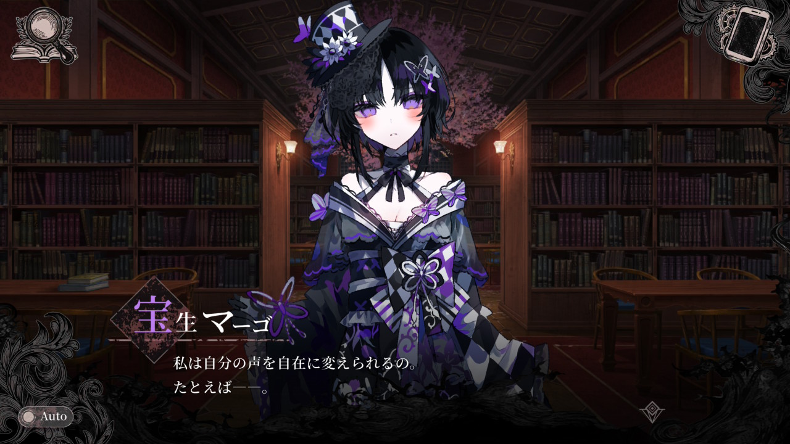
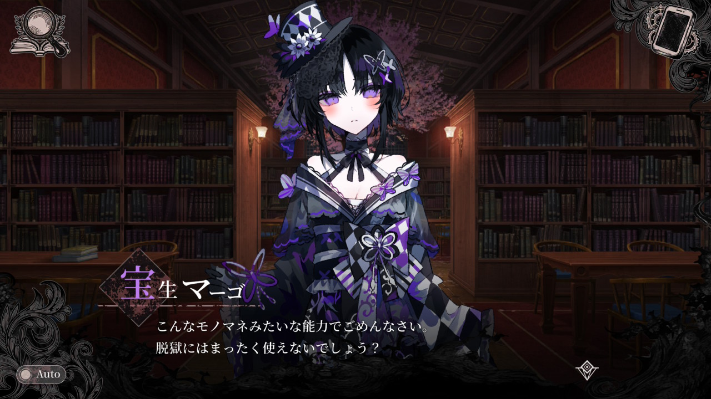
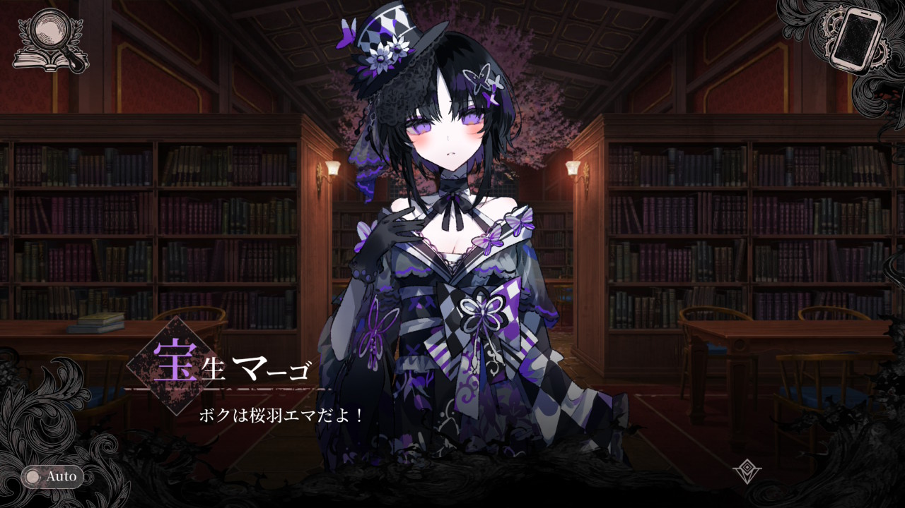
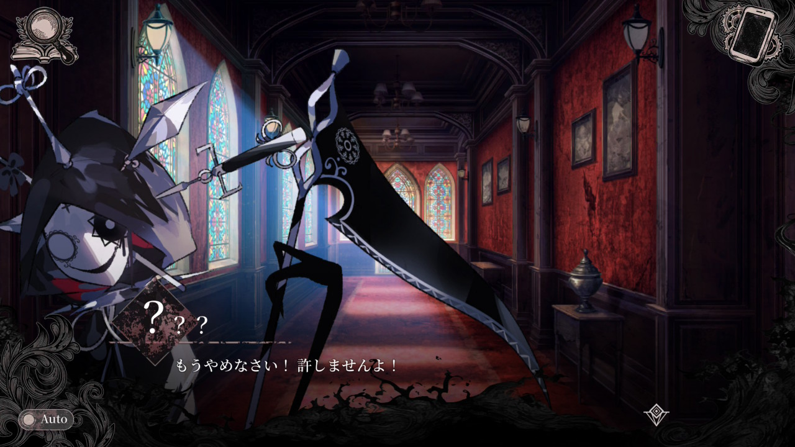
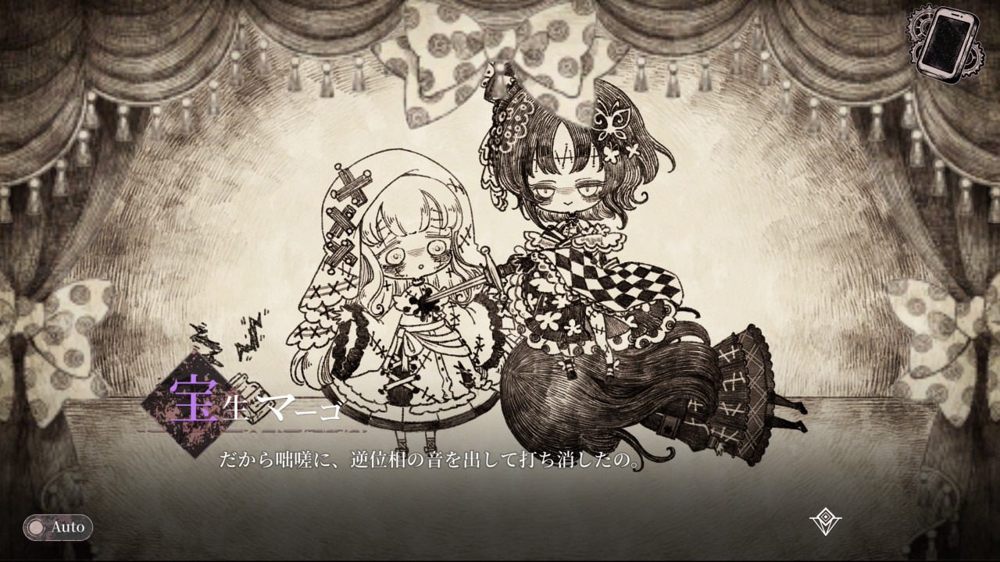
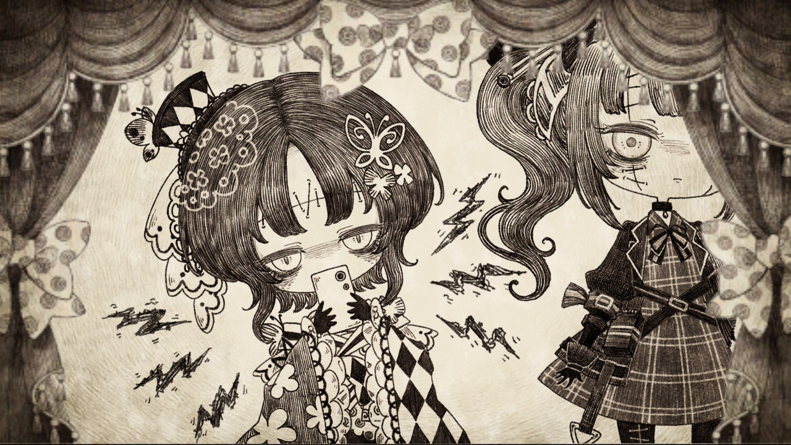
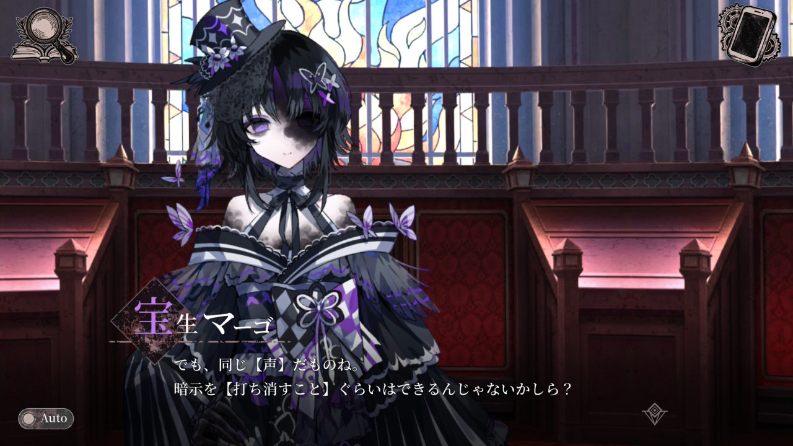
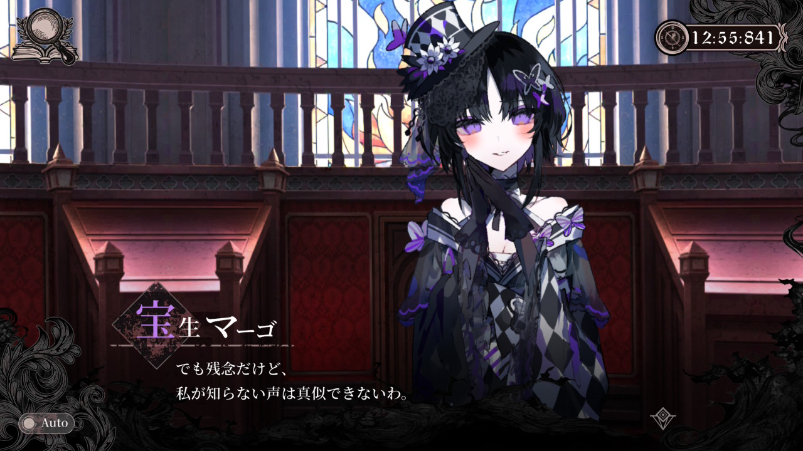
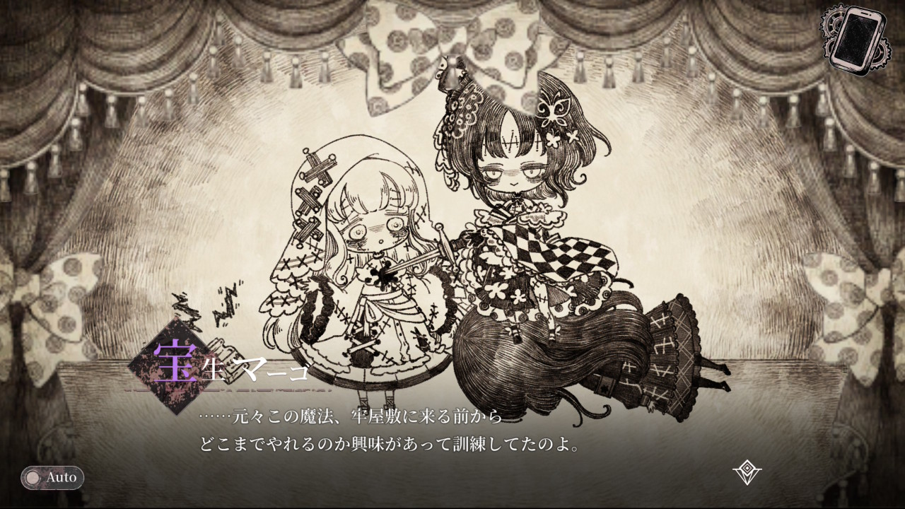
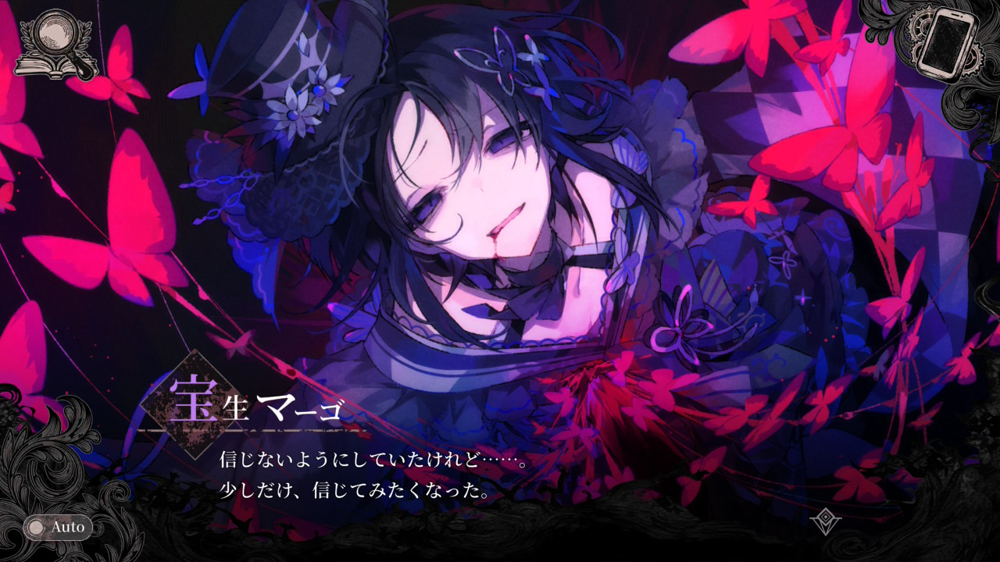

イヤホンの場合耳が来る位置で打ち消しあうように調整されている。 そのためノイズキャンセリングが可能となる。
魔法少女ノ魔女裁判で登場した宝生マーゴというキャラクタの魔法について考察したものです。 そのため考察には多分にネタバレを含んでいます。 また、筆者は音の専門家ではないため誤りを含んでいる可能性があります。 ファンの考察としてお楽しみください。
情報はなかった。 筆者は設定資料集を持っていないためこれ以上の情報はない。


信用できる情報が少ないため、起きたことから考察を進める

モノマネには声色、しゃべり方、しゃべる内容それぞれをマネする必要がある。 モノマネ芸人であればこの3要素を本人が自力でやっている。 では一体、マーゴさんは魔法でどこまでカバーされているのか。
しゃべる内容についてはおそらく自力であるだろう。
2-1のゴクチョーのモノマネなど、マーゴさんが聞いていないであろう内容を発している。

声色に関してはおそらく魔法である。 作中でモノマネしている声を聴く限り、同じでありもはや似ているというレベルではなかった。 また仮にここも自力の場合、魔法なしにモノマネができてしまう。 よってここは魔法であると考えられる。
しゃべり方はどうか。 正直不明である。 モノマネの魔法を発動すると自然と同じしゃべり方になってしまうのか、マーゴさんが自力でまねをしているか判断できない。 しかし、しゃべり方が存在しないガラスが割れる音のモノマネできているため自力ではないかと思われる。 また、しゃべる内容によってしゃべり方も変化するため、しゃべり方も自力でやっていると思われる。
結論は魔法は声色だけでしゃべり方やしゃべる内容は自力である

2-1で犯行時のガラスが割れる音に対して発動している。
しかし予想外であったため完全にキャンセルすることはできず、抑制にとどまっている。
抑制したものの耳のいいレイアに聞かれてしまった。
ちなみに、メルルの悲鳴は完全に消された可能性がある。
ノイズキャンセリングの仕組みは、発生した音に対して逆位相の音を同時に聞かせることで、音を聞こえなくするというものである。


波というのはぶつかった場合、その場では合成されるがそのあとは何もなかったように通過する。
イヤホンの場合耳が来る位置で打ち消しあうように調整されている。
そのためノイズキャンセリングが可能となる。
しかしマーゴさんのケースは異なる。 どこに音を聞いている人がわからないのである。 これでは逆位相の音を出してもキャンセルされる場所もあれば、抑制どころか増幅される場所もある。 つまり通常の方法ではキャンセルできないのである。 これの解決方法は後述する。

音を聞いたときにここからなっていると感じる場所を音像という。 立体音響とは、複数のスピーカを用いることで音ごとに音像を分けたり、スピーカ以外の場所に音像を移動させたりする技術である。 当然スピーカが1つしかなければ音像はスピーカの位置にしかならない。 つまりマーゴさんは、スピーカであるマーゴさんの喉から音像を移動できないのである。 こちらも解決方法は後述する。

洗脳の魔法が、催眠波を声に乗せて届けることで洗脳をしているとしたら、その催眠波ごとマネしてしまえば可能かもしれない。 さすがに催眠波の作成はマーゴさんには難しいため、使われた催眠波を流用することになる。 そのためできることは増幅するか打ち消すにとどまるのだろう。 洗脳の仕組みが不明のためこれ以上の考察はできない。 しかし、この考察通りとすれば、声によって作用する魔法に対して強力な対抗手段となりうる。
ノイズキャンセリングと立体音響で出てきた問題を解決する方法が1つある。
魔法で音源自体を移動させることである。
つまり喉以外から音を発生させるということである。
音源の位置を移動できるのであれば立体音響は簡単である。 複数の音像をコントロールすることはできなくとも、一つの音像であれば鳴らし方を工夫しなくとも実現できる。
ノイズキャンセリングも説明ができる。 キャンセルしたい音源の位置で、音が鳴るタイミングに合わせて逆位相の音を鳴らせば可能である。 複数の音を同時にキャンセルすることはできないが、悲鳴や瓶の割れる音であれば、音の内容、音源の位置、発生タイミングがある程度予想できるためキャンセルできるだろう。
魔法の正体がモノマネだけでなく音源の移動もできたとしても、残る課題がある。
立体音響は大した問題は残っていない。 音源の位置を正確に把握できる人は少なく、多少ずれても問題ないだろう。 また移動自体が魔法によるもののため、正確な位置の指定ができる可能性がある。
問題はノイズキャンセリングである。 完全に消そうと思うと、音源の位置、波形、タイミングを完璧に合わせる必要がある。 また音が鳴ってからでは手遅れのため、音が鳴る前にこれからなる音の波形を予想する必要がある。 聞いたことのない音声はマネできないといってたため、魔法を用いた予測はできないと思われる。

音源の位置がずれれば、場所によって消えたり増幅されたりする。 波形が違えば、ある程度打ち消せたとしても2つの音が聞こえてしまう。 タイミングが半波長ずれれば、抑制されるどころかむしろ増幅されてしまう。 （音の高さによって変わるが一般的に「ラ」の高さであれば880分の1秒ずれると増幅される）
これらのシビアな操作をマーゴさんは自力で行う必要がある。
マーゴさんは普段は自身の魔法をモノマネと話す。 モノマネを披露するときは声色のみを魔法でマネをして、話し方などは自力でマネをする。 このとき音源の位置はのどから移動させない。
2-1では、ビンが落下していることに気づき、ビンが割れる音と位置を正確に予測し、割れる瞬間にモノマネをした。 予測がわずかにずれていたため、完全に打ち消すことはできずに抑制にとどまる。
その後、自身の牢屋敷で音源の位置をメルルのいる牢獄に移動させ、ビンが割れる音のマネをした。
こうではないだろうか。
マーゴさんの魔法は、声色をマネ、音源の位置を移動させる魔法。 魔女化した場合は、音に乗った魔法の一部のモノマネも可能。
ここにマーゴさんの正確無比な音の予想、音源移動の精密操作、完璧なタイミングが合わさりノイズキャンセリングを可能にしている。 ちなみにこのノイズキャンセリングは魔法が顕現してからの訓練で身に着けているので魔女化せずとも行える

やはりマーゴさんはすごかった
